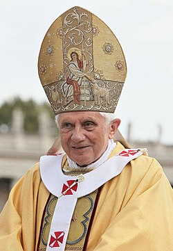

Vladimir Poutine est élu président de la Fédération de Russie dès le premier tour avec un total 52,52 % des voix.
Vladimir Poutine votant à Moscou le dimanche 26 mars 2000 à l'éléction présidentielle
George W Bush remporte les élections présidentielles le 12 décembre :
L'élection présidentielle américaine de 2000 s'est déroulée le mardi 7 novembre 2000. Celle-ci opposait principalement George W.Bush, du parti républicain, et Al Gore, du parti démocrate.
L'élection fut extrêmement sérrée, dans toutes les régions de l'état, obligeant de nombreuses fois à faire un recomptage des votes.
Cependant, la cour suprême des Etats-Unis annula l'ultime recomptage manuel des voix en Floride, désigna ainsi George W. Bush comme vainqueur de l'élection présidentielle.
L'élection présidentielle israélienne de 2000 se déroule le 31 jullet 2000. Le président est élu par les membres de la Knesset, le parlement de l'état d'Israël.
La majorité nécessaire pour être élu est de 61 voix sur les 120 que compte la Knesset. C'est finalement Moshe Katsav qui est élu à 63 voix, soit 52,5%, contre Shimon Peres, qui a rassemblé 57 voix, soit 47,5%.
Moshe Katsav
L'accord de Cotonou entre l'Union européenne et les États d'Afrique, Caraïbes et Pacifique a été signé le 23 juin 2000 dans la capitale économique du Bénin, et cela pour 20 ans.
Avec objectifs de de développer le secteur privé, d'améliorer les services sociaux, de favoriser l'intégration régionale, de promouvoir l'égalité des chances hommes-femmes, de protéger l'environnement et d'abolir de manière progressive et réciproque les entraves aux échanges commerciaux.
28 septembre : À Jérusalem, la visite d'Ariel Sharon sur l'esplanade des Mosquées provoque des affrontements entre Palestiniens et forces de sécurité israéliennes. C'est le début de la seconde intifada.
Adopté le 7 décembre 2000, la charte des verts mondiaux a été signée et proclamée par les présidents du Parlement européen, du Conseil de la Comission.
La Charte contient l'ensemble des droits civiques et sociaux des citoyens européens.
Bienvenue en 2001
1er janvier : la Grèce intègre la zone euro.
16 avril : signature par 800 délégués de partis Verts de la Charte des Verts mondiaux à Canberra en Australie.
La charte suit 6 principes :
La sagesse écologique
La justice sociale
La démocratie participative
La non-violence
Le développement durable
Le respect de la diversité
20-22 juillet : le sommet du G8 à Gênes attire 300 000 manifestants. Le 21 juillet, un policier tue l'un d'entre eux, Carlo Giuliani. Les manifestations qui entourent ce sommet font quelque 300 blessés.
11 septembre : attentats-suicides du World Trade Center et du Pentagone perpétrés avec des avions détournés par des membres d'Al-Qaïda. Les deux tours jumelles du World Trade Center s'effondrent, faisant près de 3 000 morts de 93 nationalités7. C’est le plus lourd attentat jamais perpétré sur le sol américain.
2 novembre : déclaration universelle de l'Unesco sur la diversité culturelle.
20 janvier : George W. Bush succède à Bill Clinton comme président des États-Unis8 d’Amérique, après avoir remporté de justesse l’élection présidentielle américaine en 2000.
1er avril : aux Pays-Bas, une loi autorise le mariage entre homosexuels. C'est une première mondiale.
Bienvenue en 2002
26 août au 4 septembre : sommet de la Terre de Johannesburg, avec la présence de nombreux chefs d'État (dont le président Jacques Chirac), d'entreprises de services essentiels et d'ONG.
Logo du sommet
9 octobre : le Congrès américain vote une résolution autorisant la guerre en Irak.
22 février : un cessez-le-feu négocié par des médiateurs norvégiens entre en vigueur au Sri Lanka.
20 mai : le Timor oriental devient un pays indépendant de l'Indonésie.
3 décembre : la métropole chinoise Shanghai est désignée pour organiser l’Exposition universelle 2010, qui se tiendra donc, pour la première fois depuis 151 ans, dans un pays en développement.
1er février : Daniel Pearl, journaliste du Wall Street Journal, capturé huit jours plus tôt au Pakistan, est décapité par ses ravisseurs.
Bienvenue en 2003
9 avril : le régime de Saddam Hussein en Irak tombe après 24 ans d'existence.
17 avril : l'Assemblée nationale de transition du Burundi, un pays d'Afrique, adopte à une large majorité (128 voix pour, 3 contre et 26 abstentions) une loi qui réprime les crimes de guerre, les crimes contre l'humanité et le génocide.
Le 29 septembre à 3h30 du matin, une gigantesque coupure d'électricité est survenue dans la totalité de l'Italie. Environ 10 000 techniciens furent appelés en urgence afin de rétablir le courant dans le pays.
Bienvenue en 2004
L'année 2004 est l'année internationnale de commémoration de la lutte contre l'esclavage et de son abolition en 1904.
Le 28 avril, un scandale éclate lorsque la presse révèle que des soldats américains pratiquaient des tortures ainsi que des humilations dans les prisons irakiennes. Des photos furent publiées afin de soutenir l'annonce.
L'Iran assure que la mise en service expérimentale du site de conversion d'uranium d'Ispahan ne viole pas ses engagements et que le pays ne possède pas d'autres sites nucléaires secrets.
Bienvenue en 2005
La Corée du Nord affirme, le 10 février, posséder l'arme nucléaire, deux ans après s'être retirée du Traité de non-prolifération nucléaire.
Le 16 février, le protocole de Kyoto, visant à la réduction des émission de gaz à effet de serre, entre en vigueur
Un nouveau pape est élu le 19 avril, sous le nom de Benoit XVI : il s'agit du cardinal Joseph Ratzinger.

Benoît XVI en 2010
Aux Etats-Unis, la cour suprême interdit la peine de mort pour les criminels mineurs le 1er mars.
Le "Supreme Court of the United States"
Au Japon a lieu la 1ère exposition inernationale spécialisée du XXIe siècle à Aichi. Le thème de l'expositon était "La sagesse de la nature".
Bienvenue en 2006
La politique de conquête spatiale continue avec la réussite du lancement de New Horizons, une navette spatiale américaine à destination de Pluton.
Dessin de la navette
L'Argentine et le Brésil signent un accord qui doit permettre de protéger les secteurs de production qui pourraient être trop durement affectés par la compétition du pays voisin : des droits de douane sont appliqu
La chine vote une loi qui interdit à la police de recourir à la torture la menace et le mensonge pour obtenir des confessions, ainsi que l'utilisation de moyens illégaux pour obtenir des preuves.
L'usage du tabac est officiellement interdit, le 31 mai au Québec, dans les bars et restaurants à l'intérieur de la province.
Le Monténégro est admis à l'ONU le 28 juin. C'est le 192 état membre.
Le conflit israélo-libanais, ou guerre des 30 jours, débute le 12 juillet.
Bienvenue en 2008
L'interdiction de fumer dans les cafés et restaurants s'applique désormais aussi en France à partir 1er janvier.
Dmitri Medvedev est élu président de la Russie, et nomme Vladimir Poutine en tant que premier ministre.
Dmitri Medvedev en 2015
Le Japon organise le G8 du 6 au 10 juillet 2008 à Tōyako : les pays dirigeants renouvellent leurs aides pour les pays d'Afrique et s'engagent à prendre des mesures suite au changement climatique.
Membres du G8
France
Etats-Unis
Royaume-Unis
Russie
Canada
Italie
Japon
Allemagne
En Grèce, suite à la mort d'un adolescent le 6 décembre tué par balle par un policier, des manifestations et des émeutes ont lieu dans plusieurs villes du pays. C'est le début de la crise grecque.
Le 18 janvier, un cessez-le-feu est établi entre Israël et le Hamas, mouvement de résistance islamique.
Bienvenue en 2009
Le 9 février, Eluana Englaro, une Italienne de 38 ans dans un état végétatif depuis 17 ans, a cessé d'être maintenue artificiellement en vie sur décision de justice. Son cas a provoqué une véritable crise politique en Italie.
Le 4 mars, la Cour pénale internationale lance un mandat d'arrêt contre le président soudanais Omar el-Béchir, accusé de crimes contre l'humanité et crimes de guerre au Darfour, une région de l'ouest du Soudan.
Entrée en vigueur du traité de Semipalatinsk le 21 mars. C'est un traité qui concerne le Kazakhstan, le Kirghizistan, l'Ouzbékistan, le Tadjikistan et le Turkménistan, qui s'engagent à ne pas développer, acquérir, tester ou détenir d'armes nucléaires.
Le 27 mai, la Corée du Nord annonce la rupture de l'armistice de 1953 qui a mis fin à la guerre de Corée.
Le 9 octobre, Barack Obama, président à cette époque des Etats-Unis, obtient le prix Nobel de la paix.